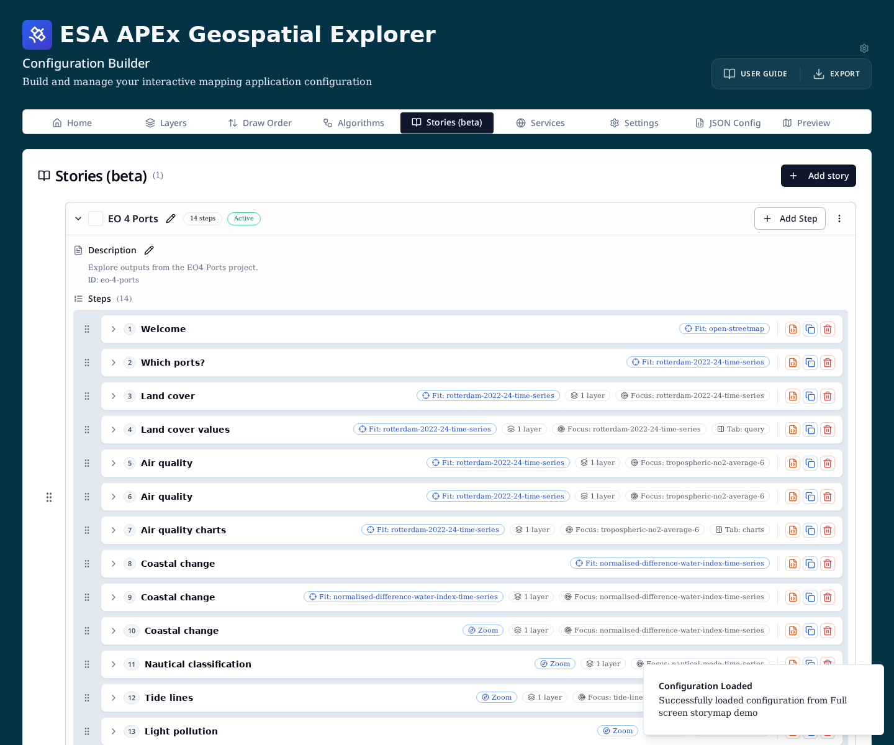
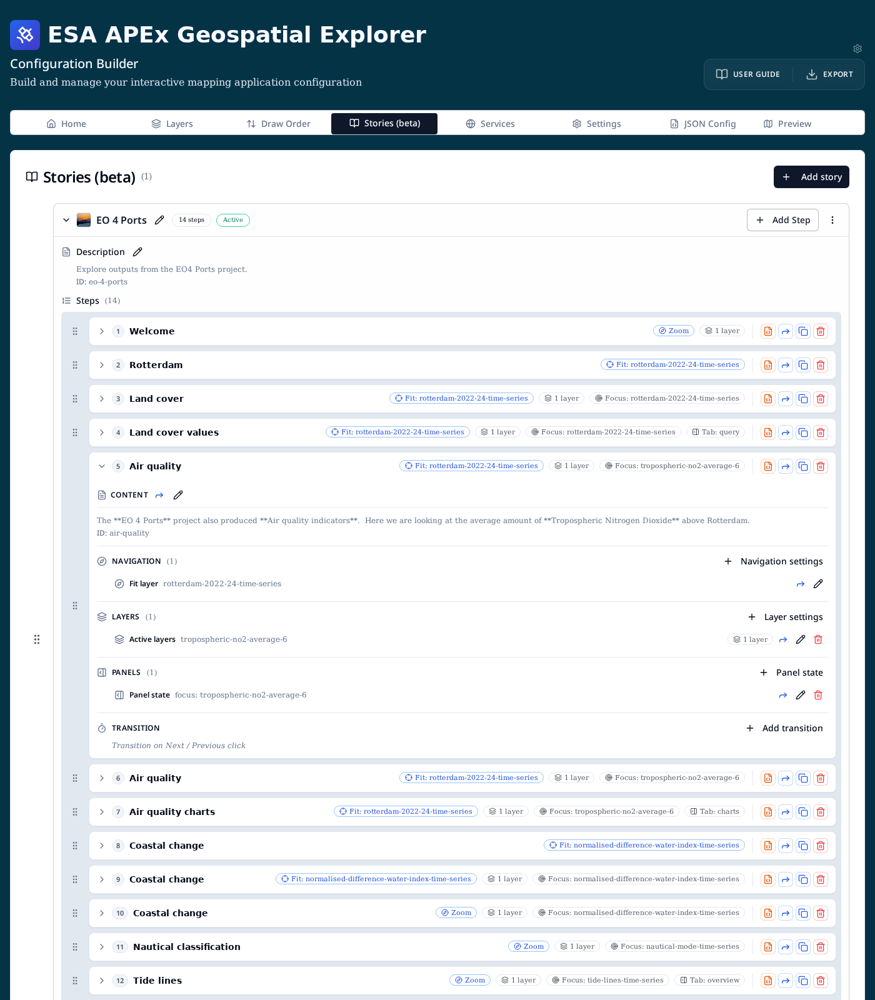
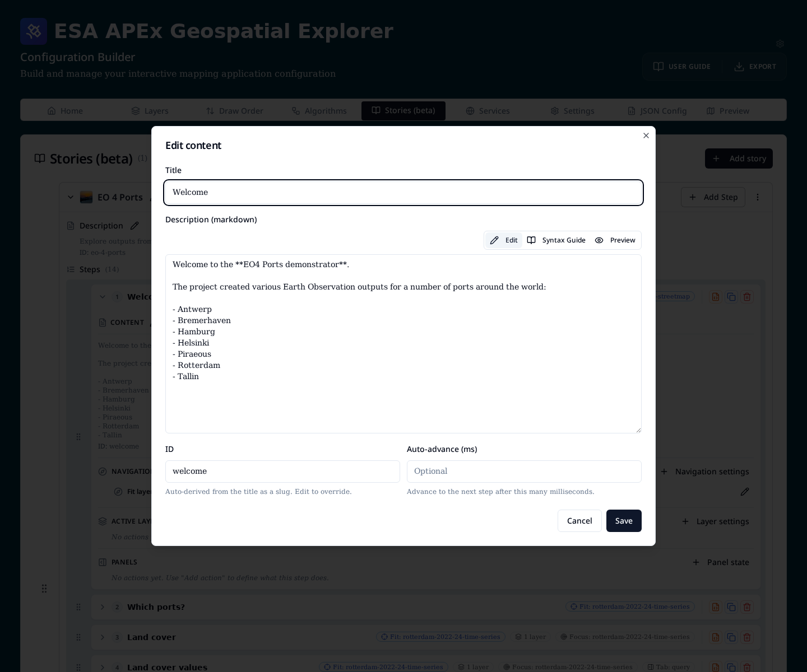
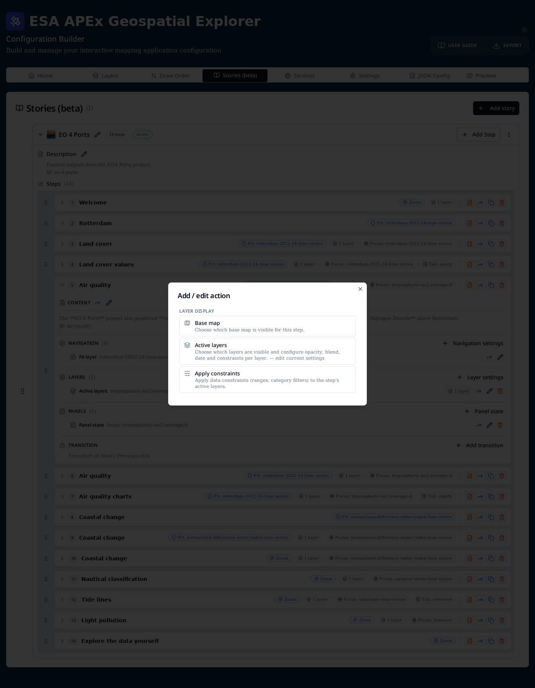
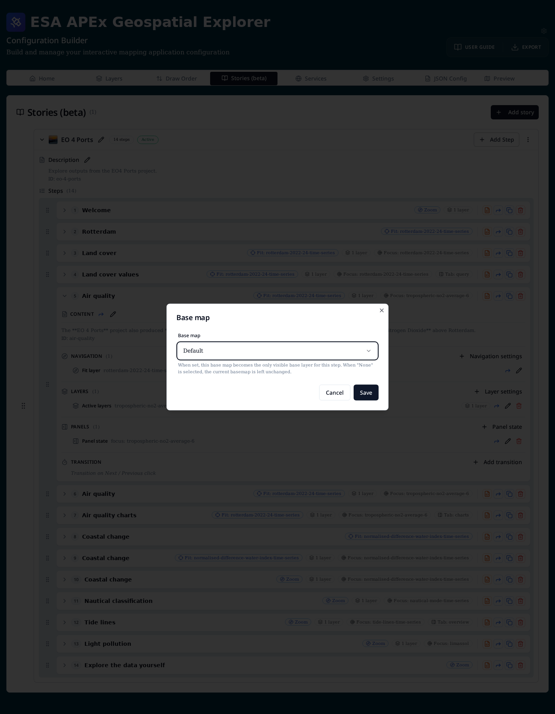
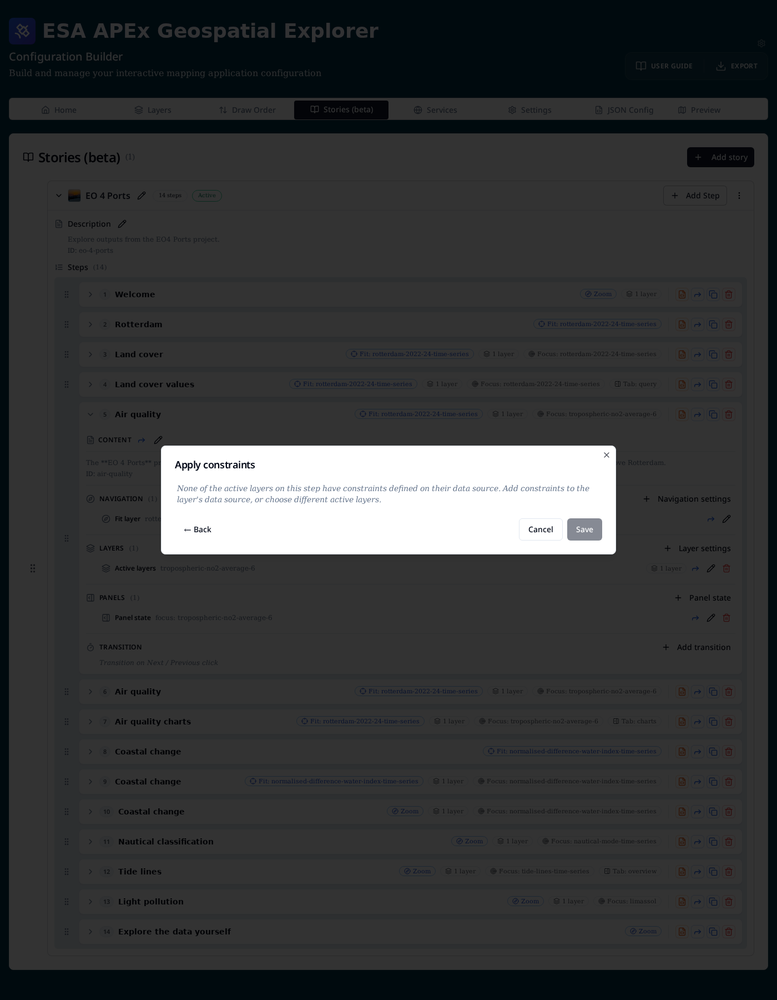
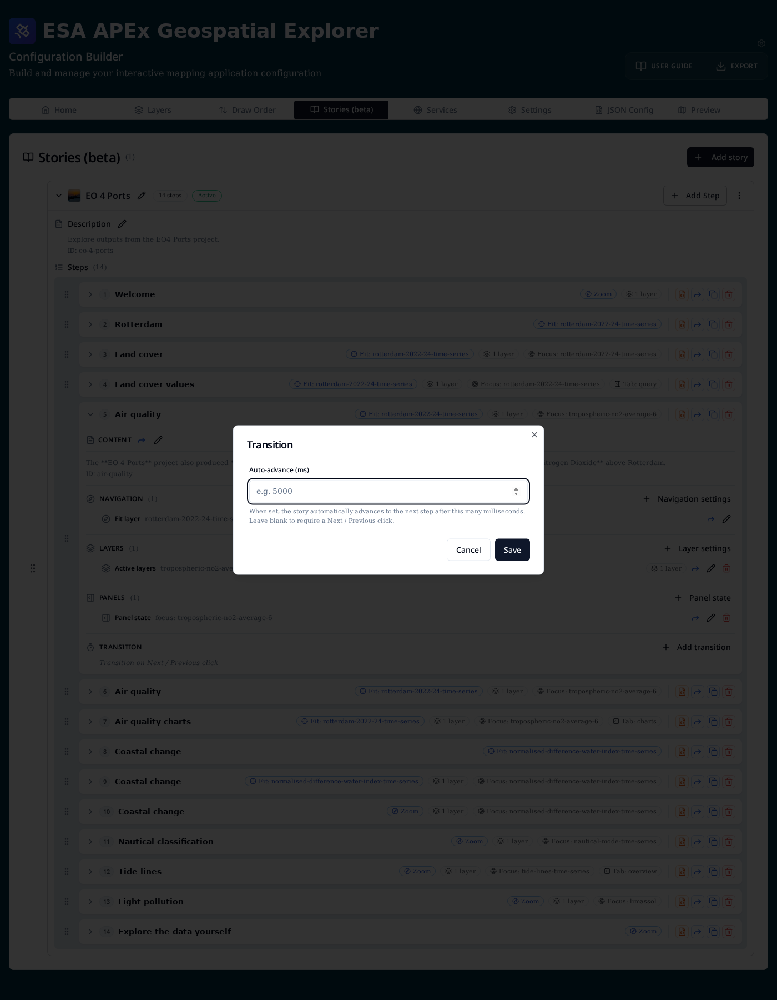
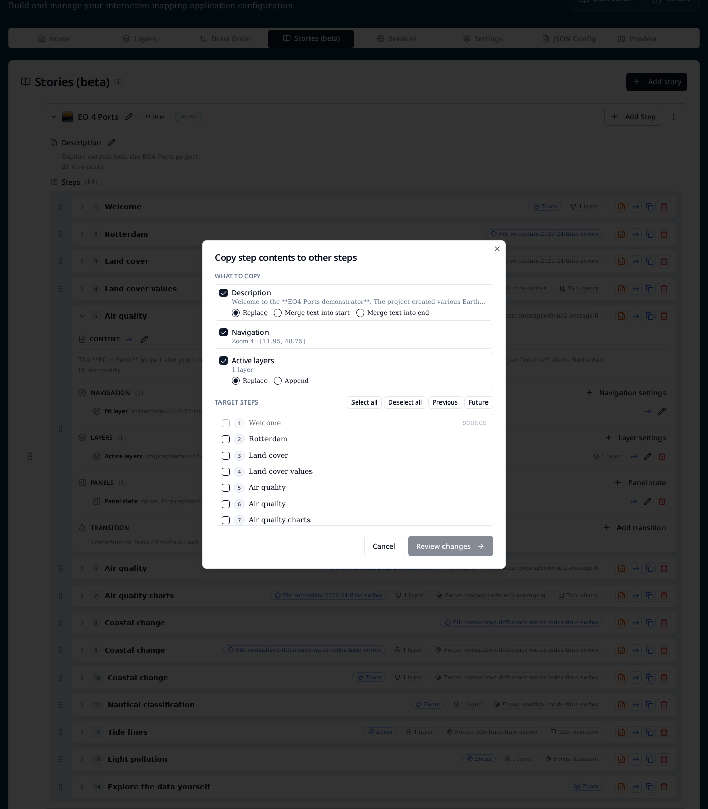
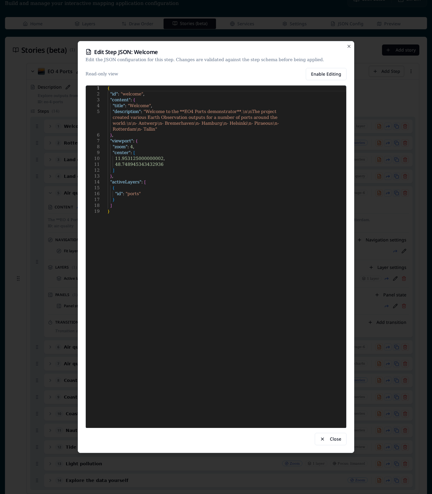
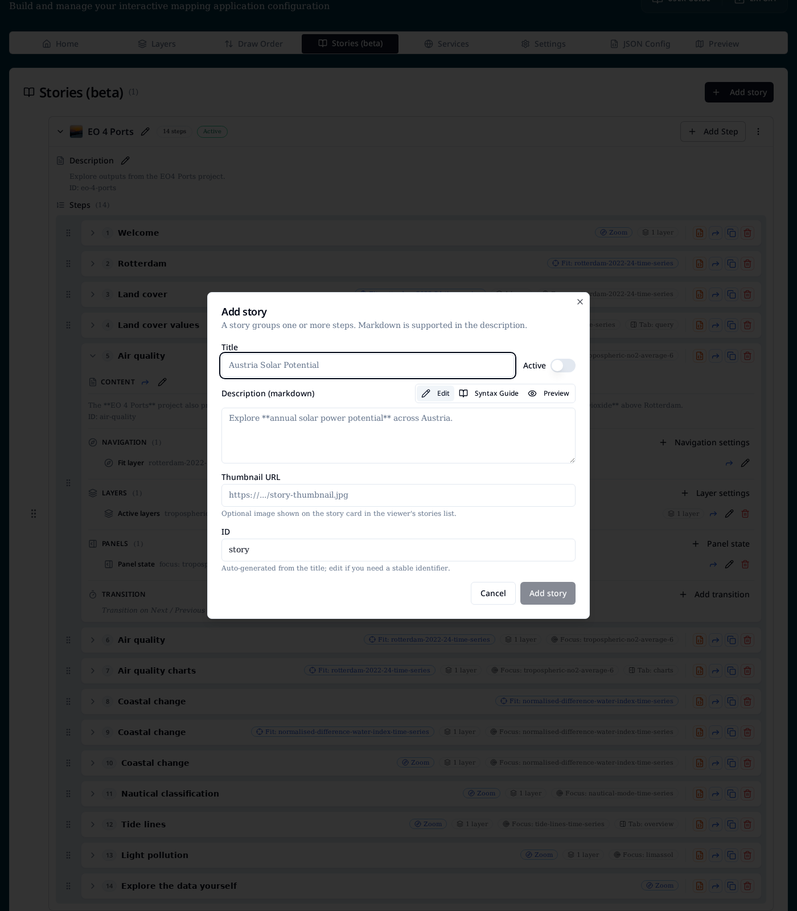

Stories¶
Stories are guided, step-by-step map experiences. A story is an ordered sequence of steps, and each step drives what the map shows through a set of actions: where to look, which layers are on, which base map is underneath, what the info panel is doing, and whether the step auto-advances.
At runtime users navigate through the steps with the previous / next
controls, and the URL reflects the current step (/stories/{id}?step=3).
Concepts¶
- Story — a titled sequence of steps with an
id, an optional Markdown description, an optional thumbnail, and anActiveflag that makes the app open the story on load. - Step — one frame of the story. Owns its own content (title + Markdown) plus a bag of actions.
- Action — one aspect of what a step does. Actions are grouped into
four categories:
- Navigation — where the map goes (zoom + centre, fit a layer, or fit an explicit extent).
- Layer display — which overlay layers switch on (Active layers), which Base map is used, and any Apply constraints (per-layer ranges / category filters).
- Panels — the info-panel state (focus layer, expanded / locked control sections, active tab).
- Transition — whether the step Auto-advances to the next step after a delay instead of waiting for a click.
- Layout variant —
fullscreenrenders story content as a map overlay;standardrenders it in the sidebar. Set vialayout.design.variantor the?variant=URL parameter.
The Stories tab¶
The Stories (beta) tab lists every story in the config as a card. Each card shows the title, step count, and an Active badge when the story is the initial one.

The tab is hidden by default. Turn it on from Settings → App settings → Show Stories (beta) tab while it is in beta.
From the tab you can:
- Add story (top right) — open the story dialog to create a new story.
- Add Step (per story) — append a step to that story.
- Edit (pencil next to the title / description) — rename a story or edit its Markdown description.
- Drag (grip handle) — reorder stories, or reorder steps within a story.
- Per-step icons (right of each row) — from left to right:
- 🟧 Edit the raw step JSON.
- 🔵 Copy any of the step's settings to other steps in the same story.
- Duplicate the step.
- Delete the step.
Step summary badges¶
Each step row summarises what the step does without having to expand it:
- Viewport —
Fit: <layer id>,Zoom, or a fitted extent. - N layers — count of overlay layers switched on for the step.
- Base map — appears when the step overrides the base layer.
- Constraints — total number of per-layer constraints applied.
- Focus — which layer the info panel focuses on.
- Tab — which info-panel tab opens (
overview,query,charts, …).
Expanding a step¶
Expanding a step reveals its Content block plus one section per action category — Navigation, Layers, Panels and Transition. Every section has its own + Add … button on the right; each action row within a section has its own edit, copy-to-other-steps and remove controls.

The Transition section is special: while it is empty it shows the italic hint "Transition on Next / Previous click" so it is obvious that the step waits for user input until you add an auto-advance.
Editing step content¶
Click the pencil in a step's Content header to edit its title, Markdown body, and ID.

Fields:
- Title — heading shown in the story panel.
- Description (markdown) — body copy for this step. Supports the same Markdown as story descriptions, with Edit, Syntax Guide and Preview modes.
- ID — slug used in URLs and validation messages. Auto-derived from the title, editable.
The Forward icon next to the Content header copies the description to any other steps in the story — see Copying settings between steps.
Adding actions¶
Each action-category header has a + button that opens the Add / edit action dialog scoped to that category. From here you can add a new action or jump into an existing singleton to edit it.

The available actions are:
| Category | Action | What it controls |
|---|---|---|
| Navigation | Navigation | Map viewport: Zoom + centre, Fit layer, or Fit extent. |
| Layer display | Base map | Force a specific base map for this step. |
| Layer display | Active layers | Which overlay layers are on, plus per-layer opacity, blend, date and constraints. |
| Layer display | Apply constraints | Aggregated editor for the constraints on all active layers. |
| Panels | Panel state | Info-panel focus layer, expanded / disabled control sections, and active tab. |
| Transition | Auto-advance | Milliseconds before automatically advancing to the next step. |
Base map¶
Choose a single base map for the step. Default leaves whatever the user (or a previous step) selected untouched.

Apply constraints¶
Constraints are defined on the layer's data source (ranges, category filters, …). The step-level Apply constraints editor lets you switch on a subset of those defined constraints for the step's active layers. If none of the active layers has any source-level constraints the dialog explains that and links back to the data source configuration.

Transition (auto-advance)¶
Set a duration in milliseconds. When the story reaches this step it waits that long, then automatically moves to the next one. Auto-advance is ignored on the final step, and is cleared as soon as the user navigates manually.

Copying settings between steps¶
The blue Forward icon — both on the step row and on individual actions — opens the Copy step contents to other steps dialog.

What to copy lists every facet the source step actually has. Toggle the ones you want to push. Two facets have a merge strategy:
| Facet | Strategies |
|---|---|
| Description | Replace, Merge text into start, Merge text into end |
| Active layers | Replace, Append |
| Constraints | Replace, Append |
| Everything else (Navigation, Base map, Panel state, Transition) | Always overwrite |
Target steps lets you tick individual steps or use Select all, Deselect all, Previous (all steps before this one) and Future (all steps after). The source step is always locked out. Review changes shows a per-target preview before you commit.
Editing the raw step JSON¶
For power users, the orange JSON icon on each step opens the Edit Step JSON dialog. It opens read-only and can be switched into editable mode; changes are validated against the step schema before being applied.

Adding a story¶
Add story opens a dialog with the story-level fields:
- Title — display name shown in the story browser.
- Active toggle — makes this the story the app opens on load. Only one story should be active at a time.
- Description — Markdown intro shown above the current step. Switch between Edit and Preview, or open the Syntax Guide for supported Markdown.
- Thumbnail URL — optional image for the story card in the viewer.
- ID — URL-safe slug auto-generated from the title; edit if you need
a stable identifier (it is used in
/stories/{id}).

URLs¶
| URL | Behaviour |
|---|---|
/stories |
Story browser listing all configured stories. |
/stories/{id} |
Opens story {id} at step 1. |
/stories/{id}?step=3 |
Opens story {id} at the third step (step is 1-based). |
When a story is marked Active the app redirects / to that story on
load, as long as stories are enabled in layout.navigation.links.
JSON structure¶
Stories are stored under the top-level stories array in config.json.
The exported JSON is the source of truth — the Stories tab is a
structured editor over the same shape.
{
"stories": [
{
"id": "eo-4-ports",
"title": "EO 4 Ports",
"isActive": true,
"description": "Explore outputs from the EO4 Ports project.",
"steps": [
{
"id": "welcome",
"content": {
"title": "Welcome",
"description": "Welcome to the **EO4 Ports demonstrator**."
},
"viewport": { "fitLayer": "open-streetmap", "duration": 500 },
"activeLayers": [],
"baseLayer": "open-streetmap",
"autoAdvance": 8000
}
]
}
]
}
See the full field-by-field reference in Reference → JSON schema, and try the demo config from Load → Examples → Full screen storymap demo.